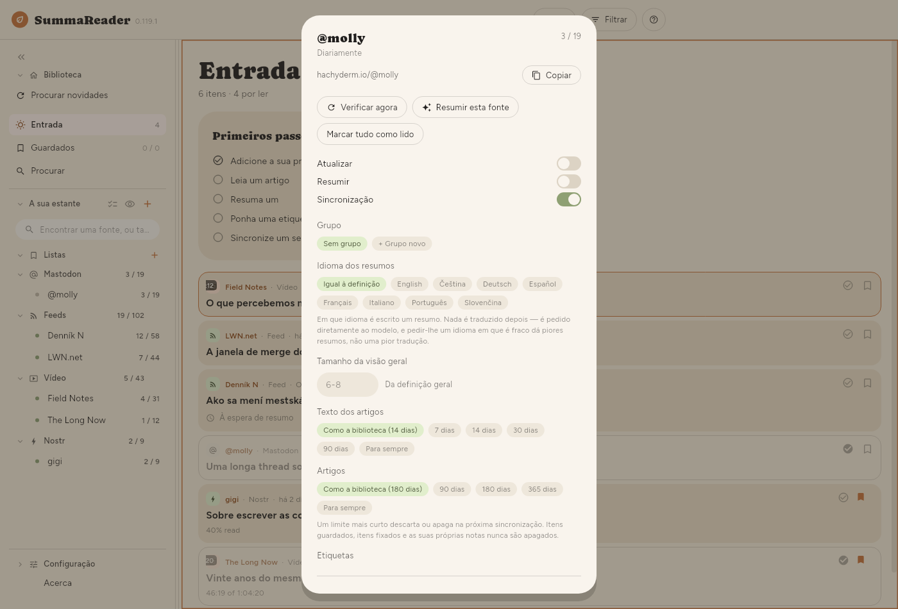
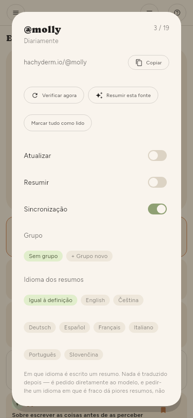

← Guardar coisas · Índice · Sincronização →
Gerir fontes
Um feed
A roda dentada numa linha da estante (visível com Selecionar vários ou um toque longo), ou a roda dentada ao lado do nome da fonte num artigo aberto, abre esse feed:


| Verificar agora | Vai buscar este feed |
| Resumir esta fonte | Tudo o que dele espera um resumo |
| Marcar tudo como lido | Tudo o que é dele |
| Atualizar | Se as verificações o incluem |
| Resumir | Se as verificações o resumem |
| Sincronização | Se os artigos dele passam para os seus outros dispositivos |
| Grupo, Idioma dos resumos | Onde fica na estante, e o idioma próprio dos resumos |
| Ler os artigos de novo | Volta a obter o texto que falhou |
| Resumir de novo | Descarta os resumos dele e refá-los |
| Remover | Pergunta primeiro e diz quanto custa |
Resumir de novo é o que deve usar depois de mudar o idioma dos resumos ou o modelo — um artigo que já tem resumo nunca é refeito de outra forma.
Muitos feeds
Configuração › Básico › Fontes › Fontes tem os mesmos controlos para a lista inteira, com um filtro e uma caixa de seleção, por isso "todos os canais do YouTube que importei na semana passada" é uma ação e não trezentas.